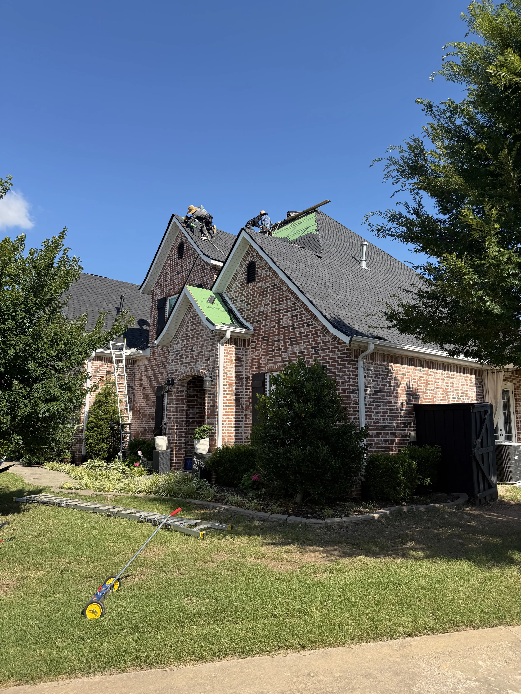

CALL A LIVE PERSON NOW
(479) 652-1424
Request Service

Roofing systems require regular check-ups to achieve their maximum engineered lifespans. Preventative maintenance is the difference between replacing a roof at 15 years versus keeping it healthy for 25+ years.
Our preventative maintenance plans clear away leaves and organic debris from valleys and gutter channels (which otherwise trap water and rot roof margins). We also examine flashing caulking, resealing joints with high-grade polyurethane sealant.
Ramos Roofing Plus offers custom annual and semi-annual maintenance programs designed for both commercial flat roofs and residential properties in storm-prone regions.
Our roof maintenance service includes cleaning debris from valleys, gutters, and downspouts; inspecting and resealing flashing around chimneys, skylights, and vent pipes; replacing dried-out rubber gaskets on pipe boot flashings; securing any loose shingles; and performing a complete diagnostic check of your roof's ventilation. This maintenance ensures your roof remains water-tight.
We recommend scheduling professional roof maintenance at least once a year, preferably in late autumn after the leaves have fallen. If your property is surrounded by dense mature trees, semi-annual maintenance in both spring and fall is ideal. Regular checkups prevent gutter clops, ice damming, and minor leaks.
Debris like leaves, pine needles, and branches trap moisture on shingles, causing moss, algae, and wood rot. Clogged gutters cause rainwater to back up under the eave shingles. Cleaning this debris, replacing cracked seals, and fixing loose shingles early prevents water infiltration, preserving the asphalt structure and extending your roof's life.
While homeowners can clear low gutters, roof maintenance involves walking steep slopes, working at heights, and diagnosing flashings. Hiring a professional roofing contractor like Ramos Roofing Plus ensures the job is done safely, utilizes high-grade commercial sealants, and includes a full roof diagnostic that a typical homeowner might miss.
A pipe boot is a rubber and metal flashing installed around the plumbing vent pipes that exit your roof. The rubber collar is exposed to constant UV rays, causing it to crack, dry out, and rot within 5 to 8 years, long before shingles wear out. Inspecting and replacing deteriorated boots is one of the most common maintenance tasks.
Yes. When gutters are clogged, rainwater cannot flow off your roof. Instead, the water pools in the gutters and backs up under the lower shingle rows. This water seep can rot the wood fascia board, damage the roof decking along the eaves, and cause leaks inside your ceilings. Regular gutter cleaning is essential to protect your roof.
Yes, we offer customized preventive maintenance programs for commercial flat roofs (TPO, built-up, modified bitumen). Our commercial maintenance includes checking welded seams, clearing roof drains and scuppers, inspecting expansion joints, patching minor punctures, and applying protective coatings. Regular maintenance is crucial to validate commercial roof warranties.
Yes. Insurance adjusters can deny claims if they find that attic leaks were caused by long-term neglect, clogged gutters, or failure to perform basic repairs. Keeping a record of regular, professional roof maintenance demonstrates that you have protected your property, helping secure a smooth claim process if storm damage occurs.
A standard roof maintenance visit is very affordable and can save you thousands of dollars by preventing major leaks. The cost depends on your roof's size, pitch, and the amount of debris cleaning required. Contact us at (479) 652-1424 to get a transparent quote for your home's maintenance needs.
Simply call our office or submit a request through our online contact form. We will schedule a technician to visit your property, perform a full cleaning and diagnostic check, apply necessary sealants, and deliver a report on your roof's health, keeping your home protected year-round.
Know someone in Fort Smith, NWA, or Eastern Oklahoma who needs a new roof or siding? Refer them to Ramos Roofing. Once their roof replacement is completed, we'll write you a check!